Types de graphiques
1 Aperçu des types
On peut trouver des aides-mémoires sur internet qui permettent de lister les différents types de graphiques pour les différents objectifs.


2 Proportions
Différentes façons de représenter les proportions:
- Camembert
- Beignet (donut)
- Barre de progression
- Sunburst
- Graphique à barres empilées
- Treemap
- Diagramme de Voronoï
- Carré
- Waffle (Graphique à gauffre)
Diagramme de Nightingale
- Représenter les proportions (total = 100%)
- Ordre selon l’ordre des facteurs ou l’ordre des proportions
- Ne pas afficher des proportions trop petites (à juger)
Eviter le 3D
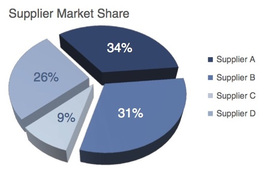
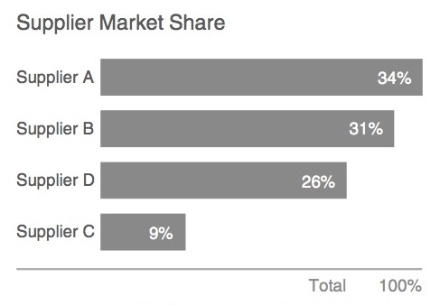
3 Comparaison
Les comparaisons peuvent souvent être effectuées avec les graphiques à barre.
On doit faire attention pour distinguer les objectifs des comparaisons: entre quantités ou proportions.
Aussi, on peut comparer des évolutions au cours du temps. Pour ça, on peut utiliser plusieurs lignes dans un graphique.
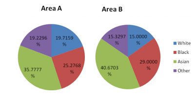
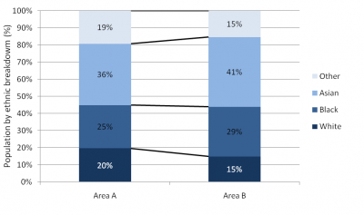
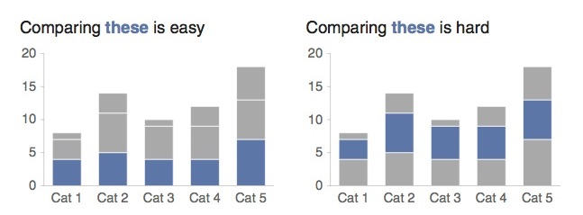
- Comparer ce qui est comparable
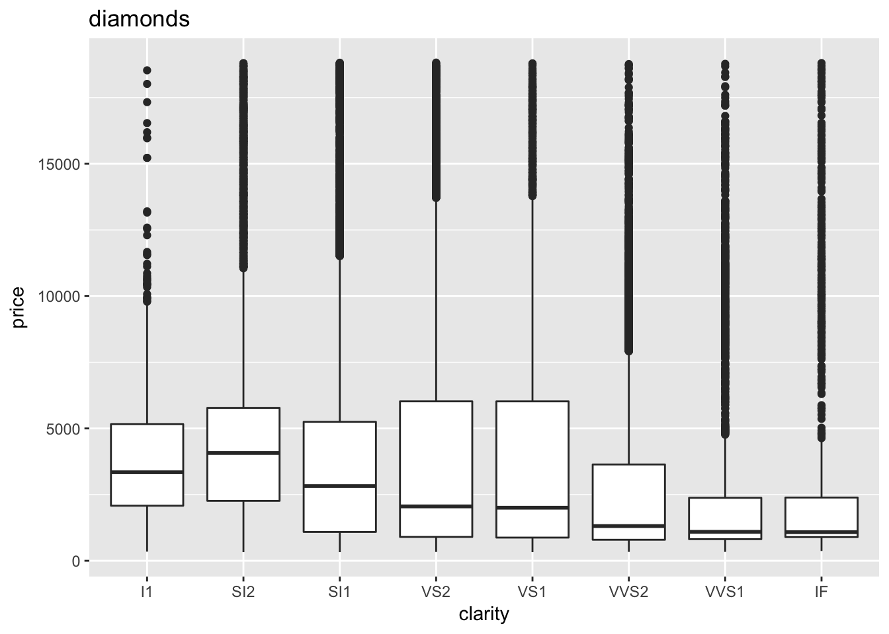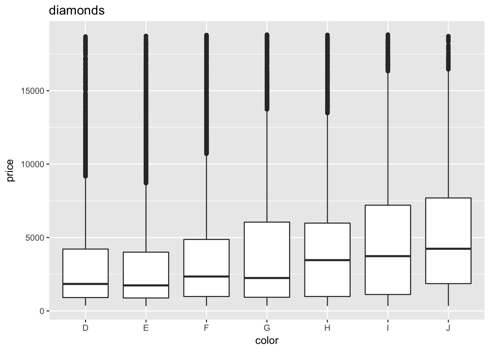
Attentions aux volumes totaux
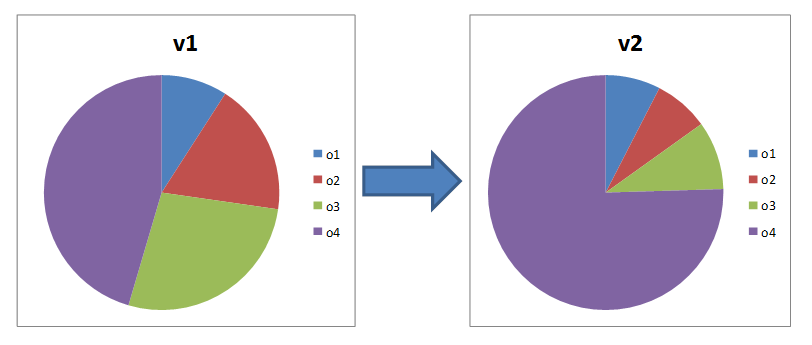
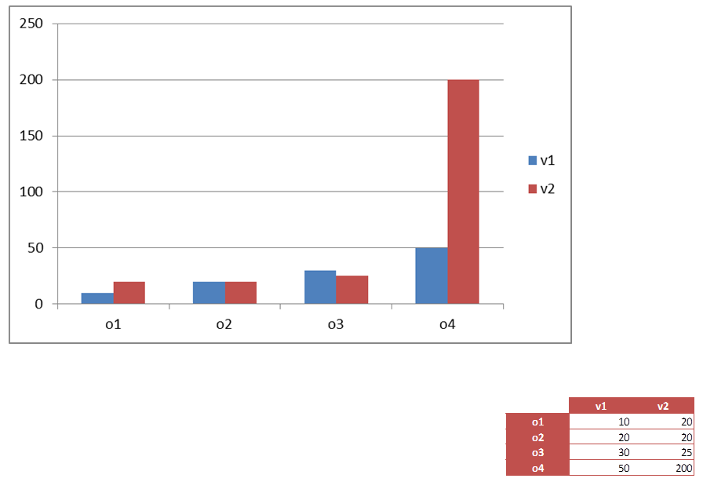
Comparaison et classement
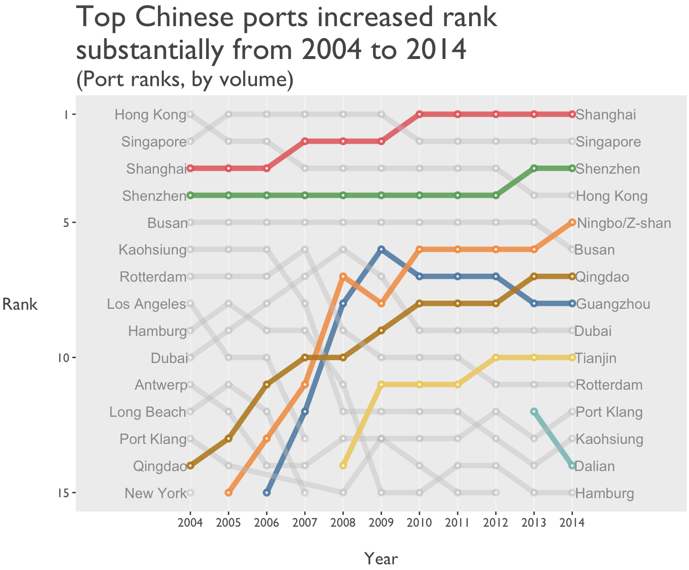
4 Evolution
Différents types de graphiques
- Ligne
- Point
- Barres
- Bubble chart
- Echelle de couleurs
- Timeline
- Animation
Points d’attention
- Echelle à choisir à bon escient
- Grille pourrait aider à voir les différents niveaux
- Ne pas montrer une partie pour conclure

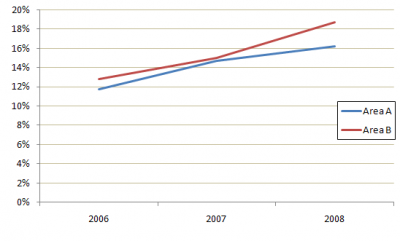
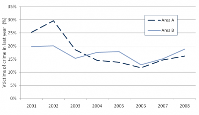
- Origine de l’axe y
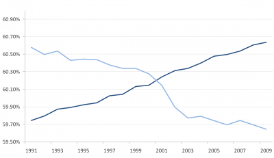
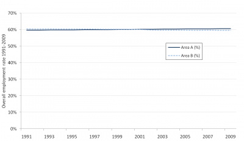
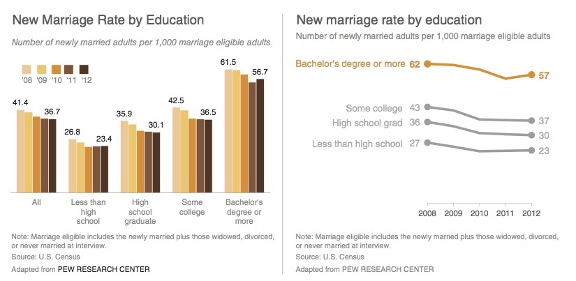
Evolution individuelle vs globale
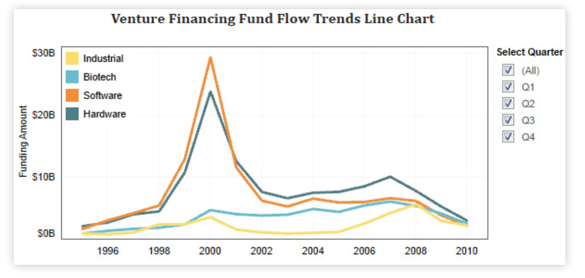
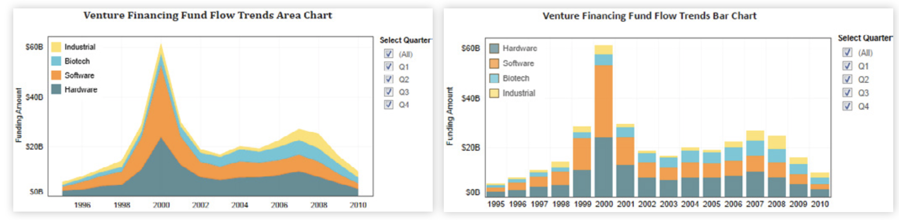
5 Distribution
Différents types de graphiques
- Histogramme
- Densité
- Nuages de points avec les lignes de niveau
- Heatmap
- Graphique 3D
- Boxplot
- Violinplot
- Bee swarm plot
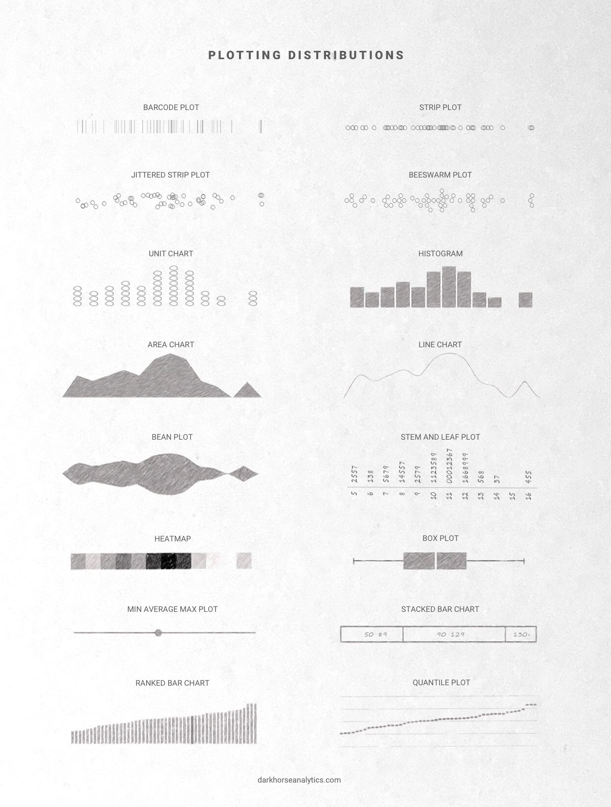
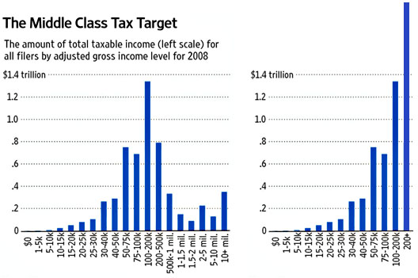
6 Autres types de graphiques
- Visualisation d’un calendrier
- Visualisation des données textuelles
- Cartographie
- Réseaux et arbres
Copyright © 2017 Blog de Kezhan Shi